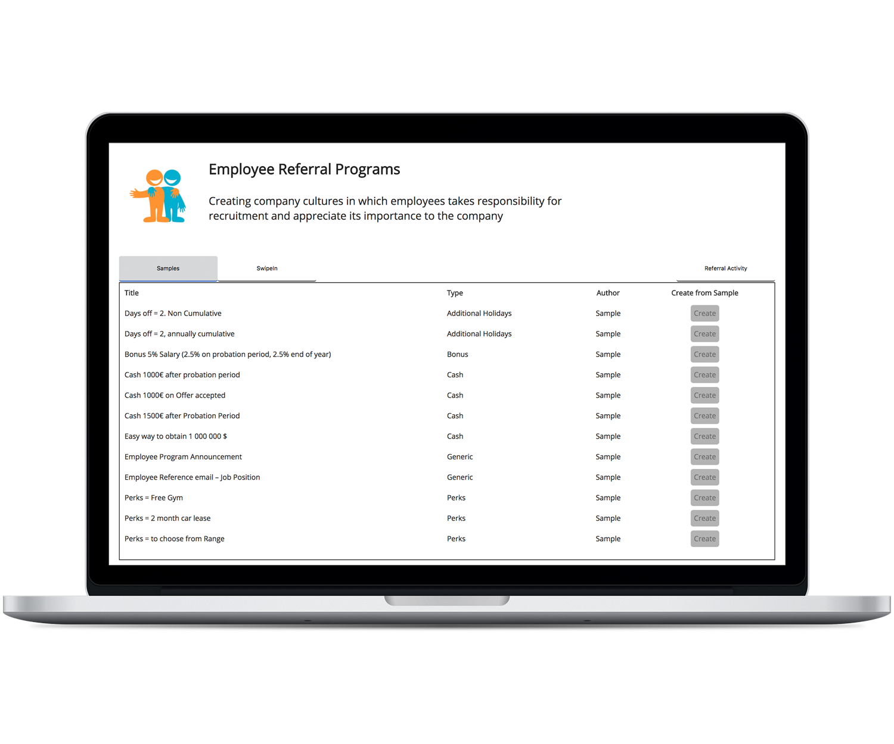

<div class="tab-inner">
  <a class="arrow left" [routerLink]="['/', 'login', {outlets: {'login-slider': ['hire']}}]" skipLocationChange><mat-icon>keyboard_arrow_left</mat-icon></a>
  <div class="content-wrap">
    <h3 class="header">Employee Referral Culture</h3>
    Create a digital enterprise where employees take responsibility to recruitment and create and manage employee referral programs and rewards easily
  </div>
  <div class="image-wrap">
    
  </div>
  <a class="arrow right" [routerLink]="['/', 'login', {outlets: {'login-slider': ['data-driven-recruitment']}}]" skipLocationChange><mat-icon>keyboard_arrow_right</mat-icon></a>
</div>